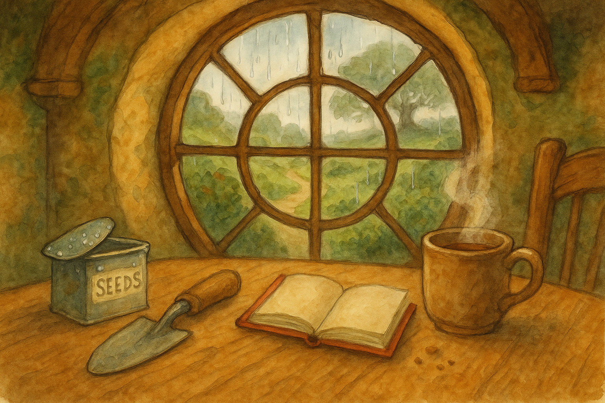

The rain came early today — not the sort that storms and shouts, but the polite Shire kind that taps a tune on anything made of tin. I set my little seed-tin on the table and listened to the tiny pit-pit of drops on the lid, as if the weather were reminding me to be patient.
I had meant to go straight out and make a grand beginning in the garden, spade in hand, sleeves rolled high. Instead I made tea (which is a beginning of its own), and I watched the Hill turn brighter as the rain darkened the soil — a fair bargain, if you ask me.
In Middle Earth, I have noticed, the Road often starts the same way seeds do: hidden, quiet, and needing a bit of time before it shows you what it means. So I wrote a line in my red book, warmed my hands on the mug, and promised myself I would plant something today, even if it is only the intention.
Filed under: Middle Earth • Written at Bag End